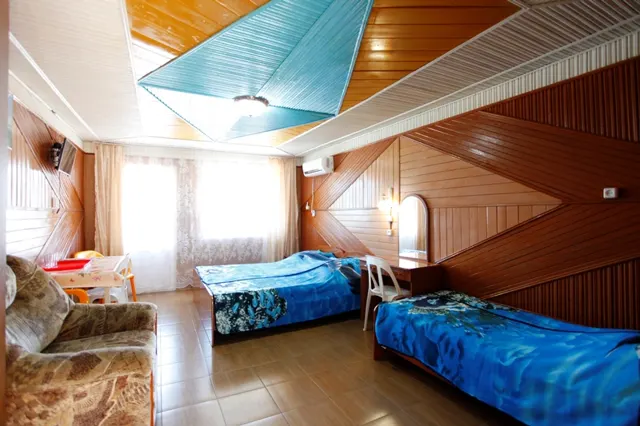

Гостевой дом «Горная фиалка» в Лазаревском
Тихий дом с бассейном на склоне у национального парка. Горный воздух, вид на море и горы, до пляжа — 20 минут пешком.

Почему у нас хорошо
Бассейн во дворе
7,3 × 3,4 метра, глубина 1,45 м. Открыт с 9:00 до 21:00, для гостей бесплатно.
Вид на море и горы
Дом стоит на склоне у национального парка: с террасы видно море, горы и центр Лазаревского.
Летняя кухня с видом
Просторная общая кухня: плиты, холодильники, микроволновка, посуда. Готовьте сами, как дома.
Мангал и беседки
Зелёный двор с цветами, беседками и мангалом — для тихих вечеров.
Парковка и встреча
Бесплатная стоянка во дворе. На вокзале «Лазаревская» встретим бесплатно.
Wi‑Fi и кондиционеры
Бесплатный интернет. В номерах кондиционер, телевизор и холодильник.
Номера

«Стандарт»
Двуспальная кровать, санузел и душ в номере, туалетный и журнальный столики.

«Домик»
Отдельный домик: односпальные кровати и кресло-кровать, свой санузел с душем.

«Эконом +»
Уютный номер, санузел с душем — на два номера.
Спросите о свободных датах — ответим и подберём номер
Сочи, Лазаревское, Марьинское шоссе, 64А · 20–25 минут пешком до пляжа